GAETAN LE COULS
Etudiant Ingénieur | Calcul Fluide-Structure
Projets et Réalisations
Etude des performances d’un brise-lames flottant - Essais en bassin
Contexte
Dans le cadre d'un projet en partenariat avec le bureau d'études Terres Océanes, nous avons étudié experimentalement une digue flottante destinée à réduire l'impact de la houle sur les zones côtières. L'objectif était d'évaluer son efficacité dans différentes conditions de mer et d'identifier des améliorations permettant de limiter la transmission des vagues.

Etapes du projet
- Préparation de la maquette à l'échelle 1/20 et installation dans le bassin à houle.
- Réalisation des essais en bassin pour différentes amplitudes et périodes de houle.
- Détermination des coefficients de réflexion et de transmission à partir des mesures expérimentales et de leur traitement sous Matlab.
- Élaboration de la table des performances de la structure afin de comparer son efficacité selon les différents états de mer.
Résultats
La digue est efficace pour des houles de faible période, typiquement autour de 2 à 7s dans les conditions étudiées, avec un coefficient de transmission inférieur à 0.6. Cette structure est donc particulièrement adaptée aux conditions de houle de la Méditerranée.

Simulation hydrodynamique de l'écoulement autour d'un obstacle
Cette étude s'intéresse à l'analyse de l'écoulement hydrodynamique au sein d'un canal à houle équipé d'un haut-fond. L'objectif est d'observer les perturbations générées par la topographie sous-marine sur la propagation des ondes et sur la structure du champ de vitesse.


Simulation dynamique de l'écoulement
L'analyse détaillée met en évidence l'apparition de tourbillons (ou structures de recirculation) formés en aval de l'obstacle. Ce phénomène de décollement de la couche limite est induit par les variations brutales de la bathymétrie, provoquant des pertes de charge locales et une redistribution importante de l'énergie cinétique dans le fluide.
Optimisation de forme assisté par intelligence artificielle
Contexte
L'objectif était d'optimiser la géométrie d'une poutre trouée encastrée soumise à la flexion, afin d'améliorer sa rigidité tout en conservant une quantité de matière constante. Une seconde partie du projet consistait à utiliser les résultats de ces optimisations pour constituer une base de données destinée à entraîner un modèle d'IA capable de prédire directement la géométrie optimale.
Optimisation via un algorithme itératif de minimisation d'énergie
Cette étape consiste à optimiser la résistance mécanique sous contrainte de volume (en conservant la même quantité de matière) à l'aide d'un multiplicateur de Lagrange. L'algorithme redistribue la matière de manière optimale pour réduire les zones de fortes contraintes.
Validation numérique de l'optimisation

La validation numérique confirme une meilleure résistance de la structure optimisée, avec notamment une flèche diminuée de 40% par rapport à la poutre initiale.
Prédiction par un réseau de neurones

Etude mécanique et dimensionnement d’une passerelle piétonne
Contexte
Le but est de dimensionner une passerelle piétonne dont les dimensions sont données ci-dessous. L'objectif principal est de déterminer les spécifications des poutres en I permettant la bonne tenue de la structure. Pour ce faire, on prend en compte les charges d'exploitation (usagers), les charges extérieures (vent, neige, etc.) ainsi qu'un coefficient de sécurité appliqué aux différents éléments de la structure.
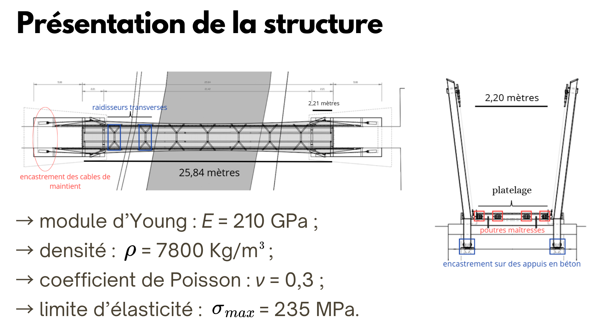
Démarche de dimensionnement
Dans un premier temps, on réalise un prédimensionnement 2D rapide pour estimer les ordres de grandeur, avant de passer à une modélisation 3D plus fine permettant d'ajuster précisément les dimensions de la structure (l'objectif étant d'obtenir une passerelle résistante mais optimisée, c'est-à-dire ni trop lourde ni trop coûteuse). Pour valider la robustesse et la fiabilité des résultats numériques, une analyse de convergence en maillage a été systématiquement menée. Enfin, nous avons également procédé à une étude vibratoire des modes propres afin de s'assurer de la bonne tenue dynamique de la passerelle et d'éviter tout phénomène de résonance.
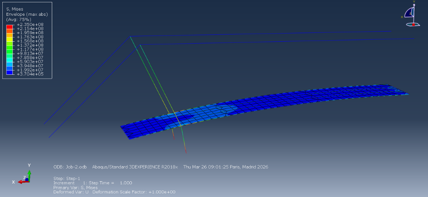
Analyse des contraintes
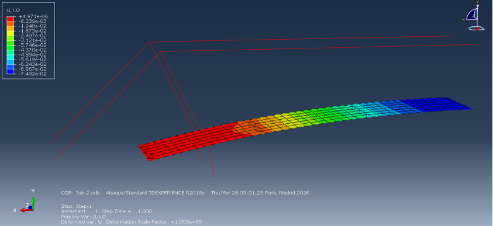
Analyse de la flèche (déformée)
Conception d'un IMOCA sur Rhino3D
Passionné par la voile et notamment par la course au large, j'ai profité de mon temps libre pour concevoir un modèle complet d'IMOCA sur Rhino3D. Ce projet personnel m'a permis de me familiariser en profondeur avec le logiciel, à la fois sur la partie conception géométrique (surfaces, lignes de coque, appendices) et sur la partie rendu visuel.


Compétences
Domaines d'Expertise & Domaines de Modélisation
- Modélisation et Calculs : Spécialisé en modélisation avancée et dimensionnement multiphysique pour l'ingénierie.
- Mécanique des Fluides : Résolution de problèmes d'écoulements visqueux ou non, compressibles ou incompressibles, incluant les écoulements diphasiques et en milieux poreux.
- Hydrodynamique & Océanographie : Modélisation des écoulements hydrodynamiques (houle) et des interactions fluide-structure (IFS).
- Mécanique des Solides : Analyse de la tenue à la charge, comportement sous impact et résistance à la fatigue des structures.
- Thermique & Énergétique : Traitement des problématiques thermiques, réalisation de bilans d'énergie et transferts de puissance.
- Architecture Navale : Conception géométrique numérique (notamment sur Rhino) et réalisation de calculs de stabilité navale.
- Méthodes Numériques & Implémentation : Mise en œuvre et développement de solveurs numériques (Éléments Finis, Différences Finies, Volumes Finis) en Python ainsi que l'utilisation de logiciels intégrant déjà des solveurs spécialisés.
Logiciels
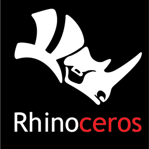
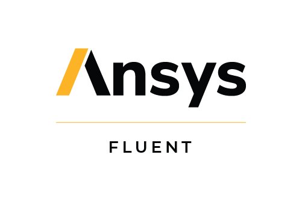
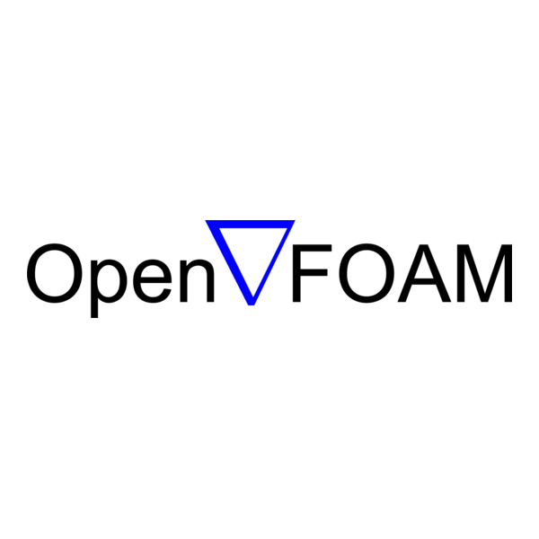
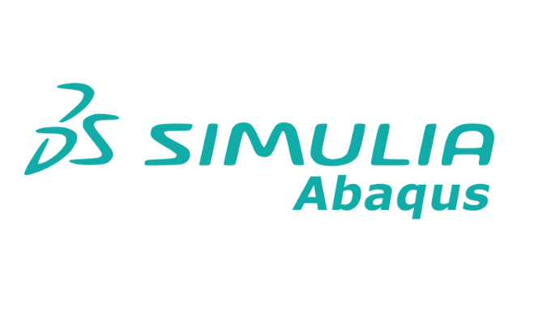
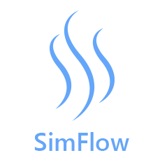
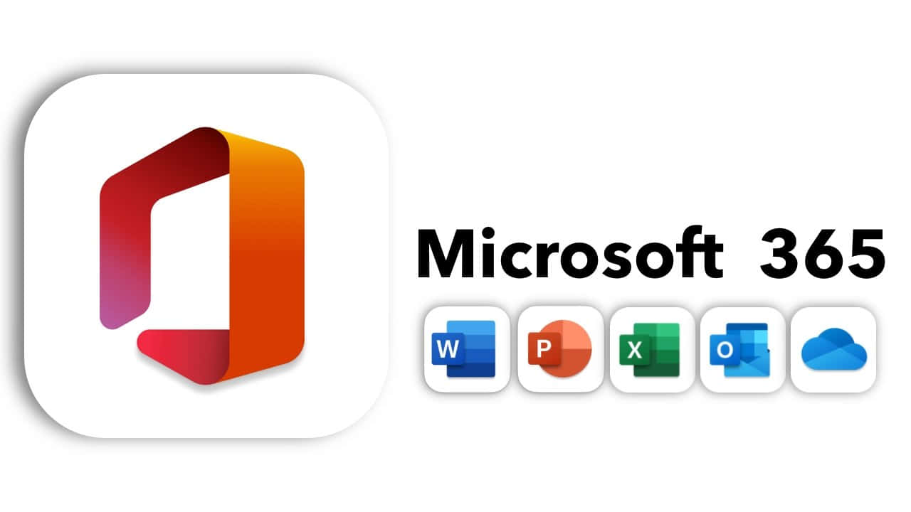
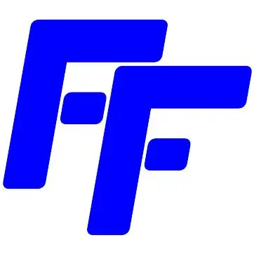
Langages de Programmation
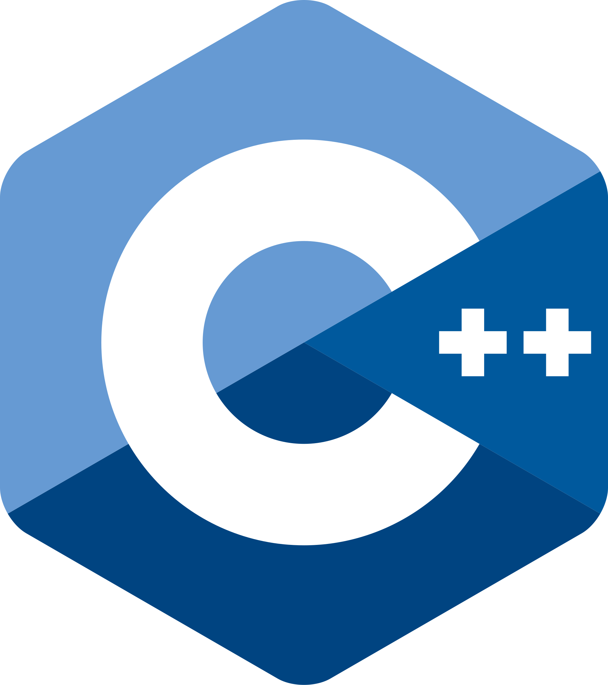
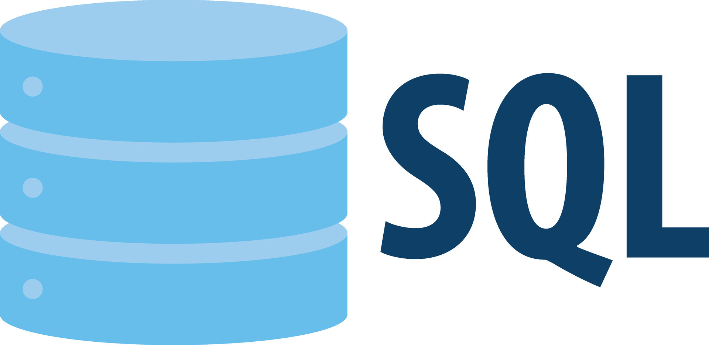
Formation
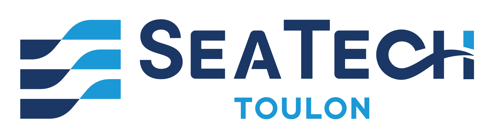
Parcours : Modélisation et Calcul Fluide-Structure
Électifs : Architecture navale | Ondes marines
- Mécanique des fluides avancée et hydrodynamique : Étude approfondie des équations de Navier-Stokes, modèles de houle (Airy, Stokes, Boussinesq), écoulements diphasiques et interactions fluide-structure.
- Mécanique des structures et thermique : Dimensionnement de structures, comportement thermique des matériaux et résistance sous chargements complexes.
- Méthodes numériques et EDP : Résolution d'équations aux dérivées partielles linéaires et non-linéaires, analyse spectrale et stabilité numérique.
- Simulation numérique et calculs HPC : Mise en place et optimisation de solveurs numériques basés sur les méthodes des éléments finis (EF), volumes finis (VF) et différences finies (DF) avec calcul parallèle.
- Architecture navale & Hydrostatique : Conception et modélisation de navires, étude de la stabilité, boucle navire.
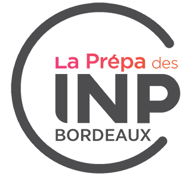
- Cycle préparatoire scientifique pluridisciplinaire menant aux écoles d'ingénieurs du réseau Groupe INP.
- Consolidation des bases fondamentales en mathématiques, physique et sciences de l'ingénieur.